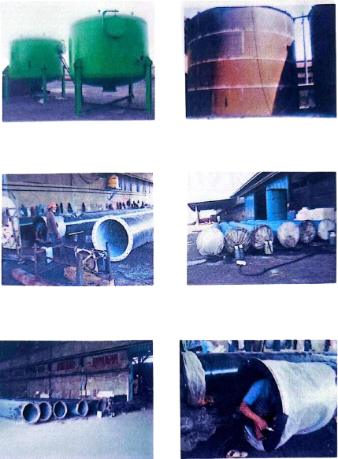
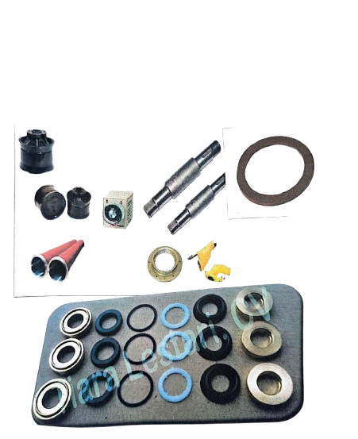
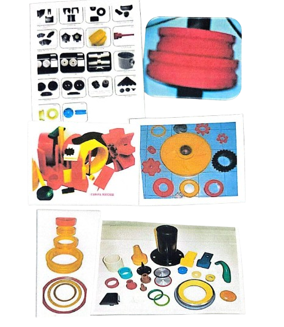
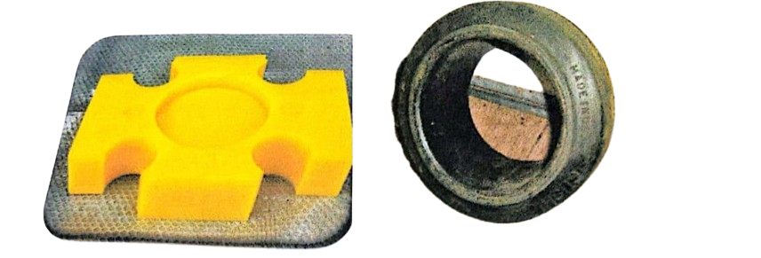

CV. Jaya Rubber Teknik berdiri sejak tahun 2008 di Krian, Sidoarjo, Jawa Timur. Kami bergerak di bidang pembuatan spare part mesin produksi serta berbagai produk teknik berbahan karet (multi rubber), Teflon, PU, bubut, dan las dengan berbagai bentuk, ukuran, dan kegunaan.
Kami berkomitmen menjaga kualitas produk demi kepuasan pelanggan serta menjalin kerja sama jangka panjang. Dengan sistem manajemen yang baik, kami telah melayani permintaan pasar secara nasional maupun internasional.




Kami siap membantu kebutuhan industri Anda dengan produk berkualitas.
Hubungi via WhatsAppDownload profil lengkap perusahaan kami:
Download Profile Company (PDF)📍Alamat: Jl. Bareng Krajan, Krian, Sidoarjo
📱WhatsApp: 0851-0007-5297
✉️Email: jayarubberteknik@gmail.com